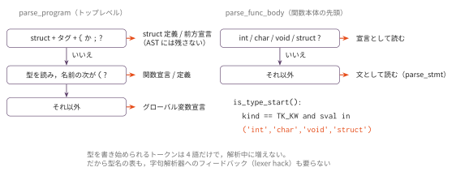
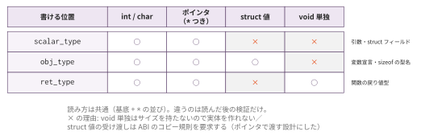
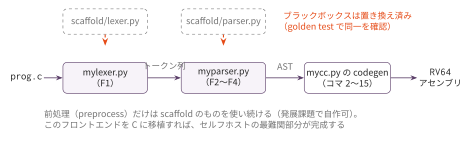

再帰下降パーサ③ — 宣言・型・プログラム全体（最終回）
今日のゴール
型・宣言・struct 定義・関数を実装して parse_program を完成させる。
講義の全テスト入力（約100本の .c）で AST が スキャフォールド と完全一致したら、
Lexer（F1）とあわせてブラックボックスの完全な置き換えを宣言する。
この回の位置づけ
| 項目 | 内容 |
|---|---|
| 必須の前提 | F3 |
| 推奨の前提 | — |
| 改変しない | mycc.py、scaffold/ |
| 編集する | myparser.py |
| 完了条件 | check.py の全 Step が PASS になり、golden.py が全テスト入力（約100本の .c）でAST の完全一致を報告する |
| コマ数 | 1 |
| 備考 | フロントエンド発展シリーズの最終回。F1 とあわせてブラックボックスの完全な置き換えになる |
ProgramParser は自分の F3 StmtParser を継承する。継承の連鎖は
F2（式）→ F3（文）→ F4（宣言・型）で完結する。
F2 で先送りした sizeof も、この回で最後のピースとして埋める。
宣言か、文か — 判定は4語の照合で終わる
F3 のコラムで予告した問題から始める。関数本体の先頭の2行を考える。
struct Point p; // 宣言
x = 1; // 式文宣言と式文を見分ける必要がある。この言語では、その判定は次の1行で終わる。
def is_type_start(self):
return self.cur.kind == TK_KW and self.cur.sval in TYPE_KEYWORDSTYPE_KEYWORDS は ('int', 'char', 'void', 'struct') の4語である。
型を書き始められるトークンはこの4語だけで、解析中に増えることがない。
だから表もいらず、字句解析器へ情報を戻す必要もない。

コラム: 本物の C ではこの1行が書けない。
C には typedef があるので、Point p; の Point が型名かどうかは
「そこまでに typedef を読んだか」で変わる。つまり同じトークン列
「識別子 識別子 ;」が、宣言にも式にもなりうる。
パーサは型名の集合を持ち歩き、解析しながらそれを育てなければならない
——これが C の文法の文脈依存性である。
language_spec.md の EBNF が参照している N1570 の文法では、
型名は TYPEDEF_NAME という別のトークン種別になっていて、
多くの実装はパーサから字句解析器へ型名の表をフィードバックしてこれを作る。
この折衷は俗に lexer hack と呼ばれ、C の文法の設計上の傷と言われる。
Core プロファイルは typedef を持たない。
その1つの決定だけで、パーサは表もフィードバックも持たずに済み、
判定は4語の集合照合に縮んだ。
言語の設計が実装の難しさを決める——F1 のコラムで見た a-->b も、
「後置 -- を持たない」という決定ひとつで解釈の分かれ道が消えていた。
同じことが、ここではもっと大きな規模で起きている。
型を読む — 「どこに書かれた型か」で許される型が違う
型そのものの読み方は単純である。基底（int / char / void / struct タグ）を
読み、続く * を数えるだけ。
def parse_base_and_stars(self):
"""('int', '**') のような組を返す"""ty_str 文字列（'int' 'char*' 'struct Node*'）は、この組をつないで作る。
コマ8 からずっと使ってきた表記の出所がここである。
問題はその型がどこに書かれたかである。language_spec.md の型の EBNF は、
1つではなく位置ごとに3つの非終端記号に分かれている。
| 位置 | 呼ぶ関数 | 書ける型 | 弾かれる型 |
|---|---|---|---|
引数・struct フィールド |
parse_scalar_type |
int / char / ポインタ全般 |
void 単独、struct 値 |
変数宣言・sizeof の型名 |
parse_obj_type |
上記 + struct 値 |
void 単独 |
| 関数の戻り値 | （parse_program 内で検証） |
上記 + void 単独 |
struct 値 |

同じ「基底 + *」の文法を読んでいるのに、通る型が位置ごとに違う。
スキャフォールド はこれを読んでから検証する形で実装している。
def parse_scalar_type(self):
base, stars = self.parse_base_and_stars()
if base == 'void' and not stars:
self.error("void 型は使えません(void * は可)")
if base.startswith('struct') and not stars:
self.error("struct 値はここでは使えません(ポインタにする)")
return base + stars弾かれる2つには、それぞれ理由がある。
void単独は「サイズを持たない型」である。スタックにも.bssにも 場所を取れないので、変数・フィールド・引数という実体にはできない。 戻り値だけは「値を返さない」という意味で使えるstruct値を引数や戻り値にすると、コピーの規則が必要になる。 サイズは型ごとに違い、小さければレジスタ2本、大きければ呼び出し側が 確保した領域へ——というのが実際の ABI の規定である（コマ6 の引数渡し規則が 一気に複雑になる）。この言語は「struct はポインタで渡す」に限定して、 その規則ごと避けた。フィールドにstruct値を許さないのも同じ判断で、 コマ12 のレイアウト計算をスカラーとポインタだけに閉じている
この検査は構文の仕事か、意味解析の仕事か。
「void の変数は作れない」は、型に関する制約なので意味解析（型検査）に
置くこともできる。実際 F2 では、1 + 2 = x の左辺検査を
「意味解析に任せる」として通していた。
ここで構文側に置けたのは、位置と型の組み合わせだけで判定が閉じるからである。
変数表も型環境も要らず、その場のトークンだけで決まる制約は、文法に書ける。
逆に「代入の左右の型が合うか」は周囲の情報が要るので文法には書けず、
発展課題 Q1（型検査器）の仕事になる。
どの層で弾くかは設計判断であり、文法に書けるものを文法に書いておくと、
後段が扱う場合の数がその分減る。
局所宣言と関数本体 — 宣言を置ける場所は1箇所だけ
局所宣言は初期化子を持たない（int a; と書いて、値は次の行で代入する）。
local_decl ::= obj_type IDENT ';'宣言を書けるのは関数本体の先頭だけである。そこで F4 が新設するのは
parse_func_body で、F3 の parse_block は上書きしない。
def parse_func_body(self):
self.expect('{')
stmts = []
while self.is_type_start(): # ← 宣言の並び。関数本体だけの特権
stmts.append(self.parse_local_decl())
while not self.consume_if('}'): # ← ここから先は F3 の parse_block と同じ
stmts.append(self.parse_stmt())
return Node(ND_BLOCK, stmts=stmts)同じ { ... } の見た目でも、関数本体と入れ子ブロックは別の規則である。
if の中の { ... } は parse_stmt 経由で F3 の parse_block に届き、
そこには is_type_start のループがない。だから入れ子ブロックの中の
int y; は「型キーワードで始まる式文」として読まれ、構文エラーになる。
「関数の中の宣言は先頭にまとめる」という規則が、
2つの関数を分けたという形でコードに刻まれている。
struct 定義 — 検証はするが、AST には残さない
トップレベルには struct で始まる形が3つ並ぶ。
struct Node { int val; struct Node *next; }; // 定義
struct Node; // 前方宣言
struct Node *head; // グローバル変数先頭トークンはどれも struct、次はどれもタグ名である。
分かれるのはその次なので、判定には2トークン先読みが要る。
if self.cur.sval == 'struct' and self.peek(2).sval in ('{', ';'):
self.parse_struct_decl()
continueparse_struct_decl はフィールドを1個以上読み、それぞれを
parse_scalar_type（= struct 値と void 単独を弾く）で検証する。
そして——Node を1つも作らずに戻る。
これがコマ12 の種明かしである。あの回で構造体のフィールドを 「ソース文字列を走査して集める」という一見遠回りな方法で扱ったのは、 Parser が意図的にフィールドを AST に残していないからだった。 何を AST に残し、何を残さないかも設計であり、スキャフォールド は 「コード生成に必要な最小限」に絞る側に倒している（発展課題で逆の設計も試せる）。
sizeof — F2 で先送りした最後のピース
sizeof の形は1つだけである。
'sizeof' '(' obj_type ')' → ND_SIZEOF_TYPE（ty_str を持つ）式に対する sizeof はこの言語にはない。sizeof(x) は構文エラーになる。
( の次が型キーワードなら型名形式、そうでなければ——そうでない場合はない。
def parse_sizeof(self):
self.pos += 1 # 'sizeof'
if not (self.cur.sval == '(' and self.peek_is_type()):
self.error("sizeof は sizeof(型名) 形式のみ使えます")
...F2 の LL(1) のコラムで「唯一きわどいのは sizeof(x) の ( の次が型か式かの判定だ」
と書いた。その曖昧さは、sizeof を型名形式に絞った時点で消えている。
peek_is_type が残っているのは判定のためではなく、
「( が来ていない」「型でないものが来た」をその場で名指しできるようにするため——
つまり良いエラーメッセージのためである。
先読みが本当に必要だったのは、むしろ1つ上の節の struct 定義の判定
（peek(2)）のほうだった。きわどい箇所は、思っていたのと別の場所にある。
関数 — 宣言か定義かは「読み進めた結果」で分かる
func_proto ::= ret_type IDENT '(' [ params [ ',' '...' ] ] ')' ';'
func_def ::= ret_type IDENT '(' [ params ] ')' func_body引数リストを読み終えるまで、宣言（ND_FUNCPROTO）か定義（ND_FUNCDEF）かは
分からなくてよい。閉じカッコの次が ; なら宣言、{ なら定義と、
読み進めた結果で決めればよい（先読み不要）。
引数リストの規則は4つ。
| 形 | 扱い |
|---|---|
f() |
引数なし（params は空リスト） |
f(void) |
構文エラー。parse_scalar_type が void 単独を弾く |
f(int) |
構文エラー。仮引数は名前必須 |
f(char *fmt, ...) |
... で打ち切る。固定引数が1個以上必要で、プロトタイプ限定（lib.h の printf 用） |
下2つは、F2 までの「多めに受理して後段で弾く」方針とは逆の判断である。
(void) も引数名の省略も、書けても意味が増えない（本物の C では
() と (void) に意味の差があるが、この言語の () は常に「0引数」である）。
受理する形を1つに絞れば、後段が場合分けを持たずに済む。
parse_program — 全体を組み立てる
トップレベルは3種類だけである。
program ::= { struct 定義/前方宣言 | グローバル変数宣言 | 関数宣言/定義 }+struct+ タグ名 +{または;ならparse_struct_decl()。AST には何も足さない- それ以外は基底と
*を読み、名前を読む。次が(なら関数、そうでなければ グローバル変数 - 空のプログラム（外部宣言が0個）はエラーにする
戻り値型の検証（struct 値は不可）とグローバル変数の検証（void 単独は不可）が
ここに直接書かれているのは、名前の次を見るまで、どちらの位置なのか決まらない
からである。parse_scalar_type のように読む前から位置が分かっていれば関数に
くくれるが、ここだけは「読んでから分岐して、分岐先で検証する」形になる。
グローバル変数（コマ13 の int total;）は、ローカル宣言と同じ ND_DECL になる。
トップレベルにあるか関数の中にあるかでコード生成側が .bss かスタックかを
決めていた（コマ13）。
実装
| Step | 実装対象 | 内容 |
|---|---|---|
| 1 | is_type_start / parse_base_and_stars / parse_obj_type / parse_scalar_type |
型の読み取りと位置ごとの検証 |
| 2 | parse_local_decl / parse_func_body |
宣言は関数本体の先頭のみ |
| 3 | peek_is_type / parse_sizeof |
型名形式のみ |
| 4 | parse_func |
params・...・宣言/定義の後決め |
| 5 | parse_field / parse_struct_decl / parse_program |
struct 定義とトップレベル |
expect_ident / parse_unary の上書き（sizeof への分岐）/ 入口 parse() は完成済み。
python3 myparser.py ../../sessions/12_struct_malloc_list/tests/list_min.cテスト
python3 check.py # Step ごとの単体テスト
python3 golden.py # 全テスト入力(約100本)で scaffold と突き合わせcheck.py の Step 2 以降は、同じ入力を スキャフォールド にも解析させて構造比較する。
各 Step には「弾かれるべき入力」の確認（void v; / f(struct Point p) /
sizeof x など）も入っている。通すだけでなく弾くのもパーサの仕事だからである。
golden.py が全ファイル一致になったら、このシリーズの完了である。

総仕上げ（任意）— mycc.py に差し替えて fixed17 を回す
golden test は「同じ AST が出る」ことの証明なので、理屈の上では
自作フロントエンドで fixed17 も通るはずである。実際に確かめたい場合は、
final/mycc.py の先頭にある
from parser import parseを、自作パーサを読み込む形に差し替える。
import importlib.util as _il
_spec = _il.spec_from_file_location(
"myparser",
os.path.join(os.path.dirname(__file__), "..", "advanced",
"F4_parser_decl", "myparser.py"))
_mod = _il.module_from_spec(_spec)
_spec.loader.exec_module(_mod)
parse = _mod.parseそのまま python3 scaffold/test_runner.py を実行して全 PASS すれば、
自作の Lexer/Parser + 自作のコード生成器でコンパイラ一式が動いたことになる。
シリーズのまとめ
| 回 | 学んだこと |
|---|---|
| F0 | 言語と文法・曖昧性。CYK 法 — 表を埋めれば任意の CFG が解ける（が O(n³)） |
| F1 | 字句解析 — 最長一致・分岐の順序・行番号。golden test という検証手法 |
| F2 | 再帰下降（式）— EBNF の階層 = 関数の階層。左結合はループ、右結合は再帰 |
| F3 | 再帰下降（文）— 先頭トークンでのディスパッチ。dangling else の自然な解決 |
| F4 | 宣言・型 — 位置ごとに許される型が違う。文法に書ける制約は文法に書く |
出発点の CYK は汎用だが遅く、到達点の再帰下降は 「文法を LL(1) に設計しておけば、先読み1〜2トークン・線形時間・手書き可能」だった。 この対比が、実用コンパイラのフロントエンドが再帰下降で書かれている理由である。
そして F4 で繰り返し見たのは、その「設計しておけば」の重みである。
typedef を持たない・sizeof を型名形式に絞る・(void) を受理しない・
struct 値を渡さない——どれも言語の側の1行の決定だが、
その1つずつが、パーサから表・先読み・場合分けを1つずつ消していった。
コンパイラの複雑さは、書き方より先に何を許すかで決まる。
次の一歩は発展課題 P1（C 移植・セルフホスト）である。
いま Python で書いたこのフロントエンドを C に写せば
（dict → 連結リスト、クラス → struct の定石どおり）、
セルフホストに必要な部品がすべて自分の手の中に揃う。
発展課題
- 前処理も自作する:
preprocess()（#include/#define）を自作して、 スキャフォールド への依存を完全にゼロにする（発展課題 P1 の#define自前化と同じ課題） - struct のフィールドを AST に残す:
parse_struct_declを、フィールドをND_DECLのリストとして持つノードを返す形に改造し、コマ12 のソース走査を 不要にする設計を試す（スキャフォールド を超える設計変更。golden は通らなくなる） typedefを足してみる: 型名の集合typedef_namesを持ち、is_type_startを「4語 または 表にある識別子」に広げる。 golden は通らなくなるが、コラムで述べた文脈依存性を自分の手で作れる。 そのうえで、増えたコードの量を数えてみるとよい- エラー回復: エラーで即座に止めず、
;か}まで読み飛ばして解析を続行し、 1回の実行で複数のエラーを報告する（パニックモード回復） - OCaml 参考実装と読み比べる: 配布済みの
workbook/ocaml/support/parser.mly（Menhir）は、 同じ文法を宣言的に書いている。自分の手書き再帰下降と見比べ、 生成系が何を自動化しているのかを確かめる